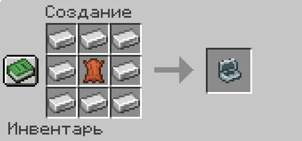

Развлечения
Сигареты и кейс
Декоративная игровая механика сигарет и кейса.
Изготовление сигареты
- Вымочи папоротник. Нажми ПКМ папоротником или высоким папоротником по котлу с водой. Расходуется 1 уровень воды; получится мокрый папоротник.
- Высуши. Положи мокрый папоротник на костёр или в коптильню примерно на 15 секунд — получится сушёный папоротник.
- Скрути самокрутку. На верстаке без формы соедини 2 сушёных папоротника и 1 бумагу.
- Прогрей. Положи самокрутку на костёр примерно на 10 секунд — получится сигарета с прочностью 100.
Игровое использование
| Действие | Вид затяжки | Расход прочности | Эффект |
|---|---|---|---|
| Быстрый ПКМ | Лёгкая | 3 | Нет |
| Удержание ПКМ | Средняя | 7 | 5% шанс кашля |
| Присесть и удерживать ПКМ | Глубокая | 15 | Тошнота 4 сек., 25% шанс кашля |
В руке сигарета испускает дым каждые 15 тиков. При снижении прочности до 0 она догорает.
Кейс для сигарет
Крафт:

- ПКМ кейсом — открыть меню на 5 слотов.
- Клик по сигарете в инвентаре — положить одну сигарету в кейс.
- Клик по занятому слоту — вынуть сигарету, если есть место в инвентаре.
- Shift + ПКМ — открыть или закрыть крышку.
Все статьи вики ↗